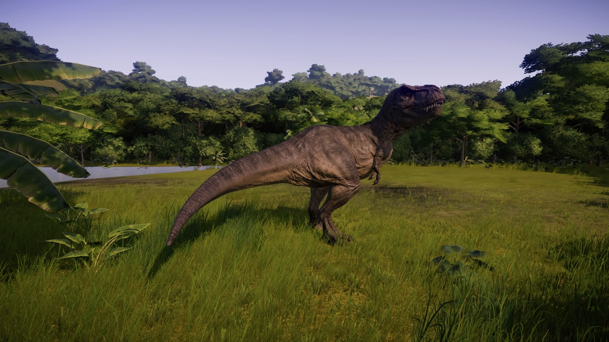

Lagarto tirano
O tiranossauro é a "jóia da coroa" do Jurassic park, proveniente do final do período cretáceo, este hábil predador podia correr até 50km/h quando necessário, porém no geral era um carniceiro, ou seja, comia carcaças que encontrava em seu território. Uma peculiaridade do tiranossauro é de que sua visão é baseada no movimento.